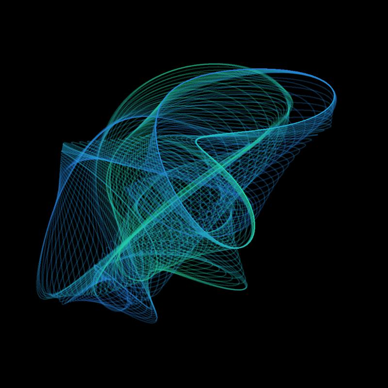
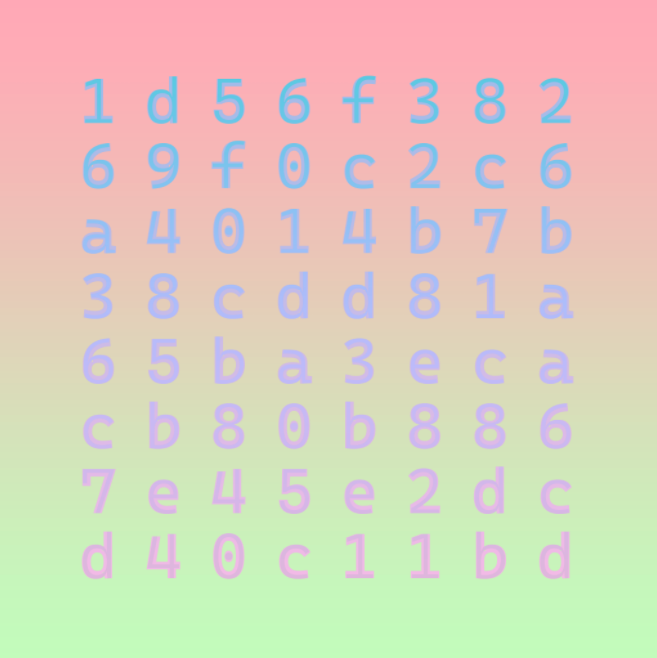

fungle.xyz
a collection of art works that intersect with web3 technology
kleee02

kleee02 is one of the first self-contained blockchain art projects
at the intersection of conceptualism and generative art.
Created in April 2019 by Kelian Maissen and Johannes Gees,
it is inspired by Paul Kleee’s famous quote:
"A line is a dot that goes for a walk".
Pick-A-Twin

Pick-A-Twin is a collective Art piece by Kelian Maissen, Johannes Gees and Andrea Ramirez.
It stands in the tradition of media art as hacking technical and cultural standards, in this case the ERC-721 token standard, better known as NFT.
Inspired by the right-click and save culture, the project consists of two visually identical NFT’s which, like any other visual on the internet, can also be right-clicked and saved.